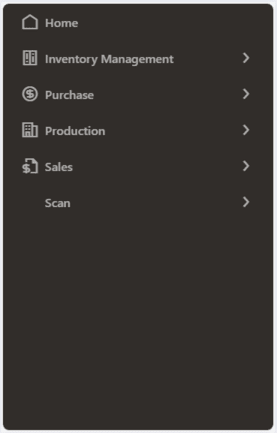
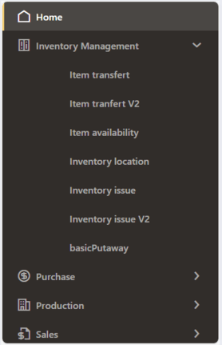
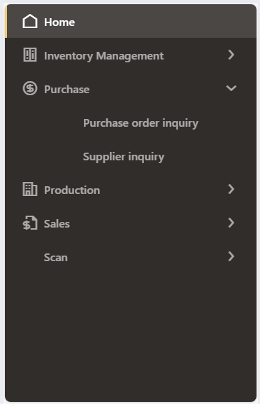
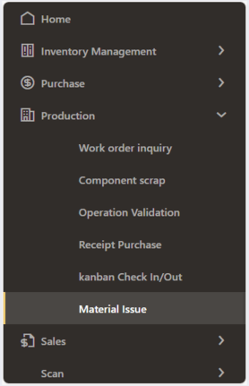
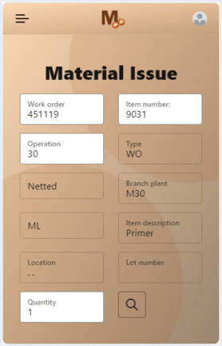
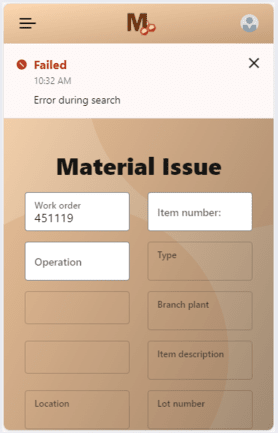
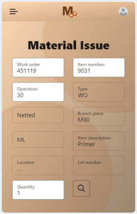
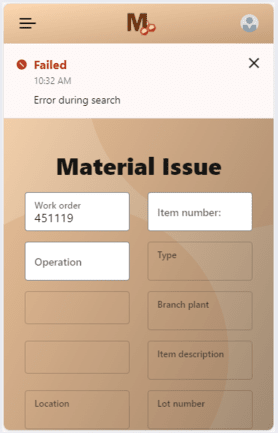

MobeeX
MobeeX est un projet de développement mis en œuvre par l'équipe d'ingénieurs d'Inetum Business Solution, dont je fais partie. MobeeX vise à intégrer une solution de " Bar Coding " pour réaliser une application mobile, connectée de manière fluide à l'ERP JD Edwards d'Oracle. Cette application offre une grande facilité d'utilisation, en exploitant les avantages des codes à barres 1D/2D (QR Code ou Data Matrix), et en proposant une liste de dialogues fonctionnels prêts à l'emploi, basés sur les programmes standards de JD Edwards.
Dans cette page
Description générale :
Le projet MobeeX représente une initiative majeure au sein d'Inetum Business Solutions, visant à développer une
application Web dédiée aux terminaux mobiles et sanners de codes-barres. L'objectif principal de MobeeX est de
faciliter les interactions entre les magasiniers opérant dans les entrepôts et le système ERP JD Edwards
d'Oracle. Cette application offre une solution de mobilité intégrée, exploitant les avantages des codes à
barres 1D/2D, pour une gestion d'entrepôt plus efficace.
MobeeX cible les PME ou les sites de petite et moyenne taille de grands groupes, pour lesquels une solution de
mobilité intégrée à l'ERP sera un avantage. intégrée à l'ERP sera un avantage.
Présentation Visuelle :
Caractéristiques Clés de MobeeX :
L'application MobeeX est spécifiquement conçue pour les terminaux mobiles tels que le ZEBRA, offrant une solution mobile optimisée pour la gestion d'entrepôt. Cette application vise à simplifier les opérations pour les utilisateurs en fournissant une interface intuitive et une intégration transparente avec le système ERP JD Edwards (JDE) d'Oracle.
Processus d'Authentification :
L'utilisateur accède à l'application en saisissant son identifiant et son mot de passe JDE. Une fois connecté, MobeeX récupère automatiquement la langue de préférence associée à son compte JDE. Cette fonctionnalité permet une personnalisation instantanée de l'affichage de l'application, offrant ainsi une expérience utilisateur plus fluide et adaptée à ses préférences linguistiques.
Menu Polyvalent :
LMobeeX propose un menu diversifié offrant une gamme étendue de fonctionnalités JDE directement accessibles depuis le terminal mobile de l'utilisateur. Les options disponibles dans le menu permettent à l'utilisateur de sélectionner et d'utiliser les fonctionnalités JDE spécifiques à ses besoins opérationnels.
  
L'équipe :
Équipe Fonctionnelle :
L'équipe fonctionnelle se compose de deux consultants, un senior et un junior, chargés d'analyser les besoins du client et le traduire en cahiers de charges fonctionnels et de piloter le projet du point de vue fonctionnel.
- Consultant Fonctionnel Senior :
Apporte son expertise dans l'analyse des besoins.
Rédaction des cahiers des charges fonctionnelles. - Consultant Fonctionnel Junior :
Participation à la rédaction des cahiers des charges et suivi quotidien de la réalisation du projet.
Équipe Technique (Développement) :
L'équipe technique, composée de huit développeurs, dont un chef de projet technique senior, est responsable de la mise en œuvre des cahiers de charges fonctionnels.
- Chef de Projet Technique Senior :
Direction technique du projet.
Garantie de la cohérence entre la vision fonctionnelle et l'implémentation technique. - Développeurs (sept au total) :
Mise en œuvre des cahiers de charges fonctionnels.
Répartition des Tâches :
- L'équipe fonctionnelle analyse les besoins du client, rédige les cahiers de charges, et pilote le projet du point de vue fonctionnel.
- L'équipe technique met en œuvre les cahiers de charges fonctionnels, assurant la cohérence technique.
Suivi du projet :
- Réunions quotidiennes par Teams pour un suivi régulier.
- Réunion hebdomadaire pour garantir le progrès et le bon déroulement du projet.
Outils Utilisés :
- IDE : Visual Studio Code
- Framework : OracleJET (JavaScript Extension Tools)
- Language informatique : TypeScript
- Gestion de Version : GitLab
- Communication : Teams et Outlook
Mes contributions :
Mon implication dans le projet MobeeX a été centrée sur le développement du dialogue 'Material Issue' et la traduction de l'application via des variables observables avec la bibliothèque Knockout.
Dialogue 'Material Issue' ('Sortie sur OF') :
Contexte & Objectifs :
Dans le contexte de la gestion de l'atelier de fabrication de l'entreprise, le dialogue 'Material Issue' a pour objectif de permettre à l'utilisateur de déclarer les quantités de matières ou de composants consommés dans le cadre d'un Ordre de Fabrication (OF). Cet outil s'inscrit dans une démarche visant à assurer une gestion précise et efficace des ressources matérielles lors du processus de fabrication.
Application JDE E1 :
L'application requise pour ce dialogue est la P31113, utilisant la version XMOB001. Cette application spécifique est dédiée à la gestion des ordres de fabrication et s'intègre parfaitement dans le processus opérationnel de l'entreprise.

Expression du Besoin :
Le dialogue 'Material Issue' se base sur le principe selon lequel les composants à utiliser sont associés à une opération de gamme.
L'utilisateur, généralement en possession d'un OF papier, dispose de la liste des composants avec des codes-barres pour leur
référence. Pour faciliter le processus, l'information est poussée à l'utilisateur, lui permettant de rechercher et de saisir les
données nécessaires de manière efficace.
L'utilisateur n'a besoin que du numéro d'OF, du numéro d'item et de l'opération pour effectuer sa recherche. Avec ces trois données,
il peut récupérer les informations restantes et ajuster la quantité en stock selon les besoins opérationnels.
Transmission et Récupération de Données depuis JDE :
Le dialogue 'Material Issue' utilise une orchestration par le biais d'un service request pour la transmission et la récupération de données depuis JD Edwards (JDE). Cette approche assure une intégration fluide entre le dialogue et le système JDE, garantissant une mise à jour en temps réel des informations relatives aux composants consommés.

 



Contexte & objectifs :
Dans le cadre de la gestion de l’atelier de fabrication de l’entreprise l’objectif de ce dialogue est de permettre à l’utilisateur de déclarer des quantités de matière ou de composants consommés au titre d’un Ordre de Fabrication.
Application(s) JDE E1 :
Une seule application est nécessaire, la P31113. Le dialogue utilisera la version XMOB001.
.
Example :
void MyMethod()
{
int x = 5;
int y = 10;
if (x > y)
{
Console.WriteLine("x est plus grand que y");
Console.WriteLine("Ceci est une instruction à l'intérieur du bloc 'if'");
}
else
{
Console.WriteLine("x est plus petit que y");
Console.WriteLine("Ceci est une autre instruction à l'intérieur du bloc 'else'");
}
Console.WriteLine("Ceci est une instruction en dehors du bloc 'if-else'");
for (int i = 0; i < 5; i++)
{
Console.WriteLine("Ceci est une instruction à l'intérieur de la boucle 'for'");
Console.WriteLine("La valeur de i est : " + i);
}
Console.WriteLine("Ceci est une autre instruction en dehors de la boucle 'for'");
}Dans cet exemple, la méthode MyMethod() contient plusieurs blocs de code délimités par des accolades. Les instructions telles que les déclarations de variables, les conditions if-else, les boucles for, et les appels à Console.WriteLine() sont regroupées à l'intérieur des blocs de code.
La structure des blocs de code permet de regrouper des instructions connexes et de définir leur portée. Les blocs de code facilitent également la lecture et la compréhension du code en organisant logiquement les instructions.